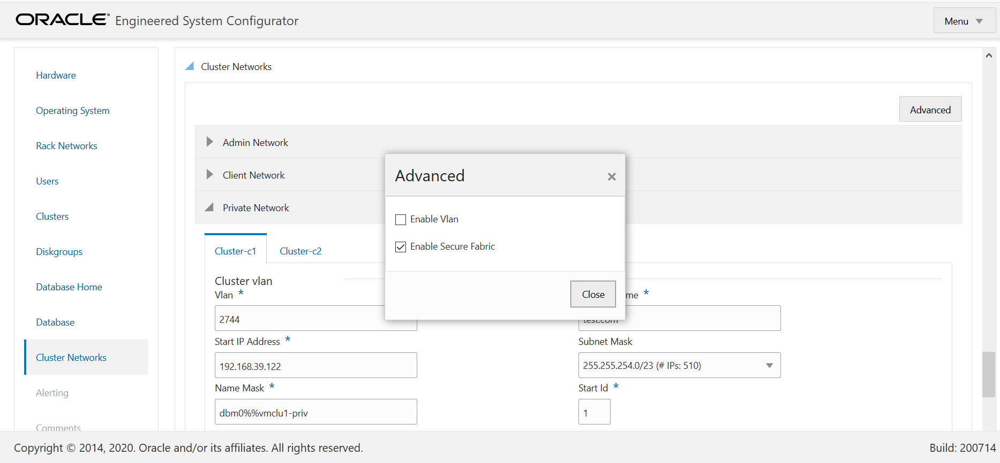
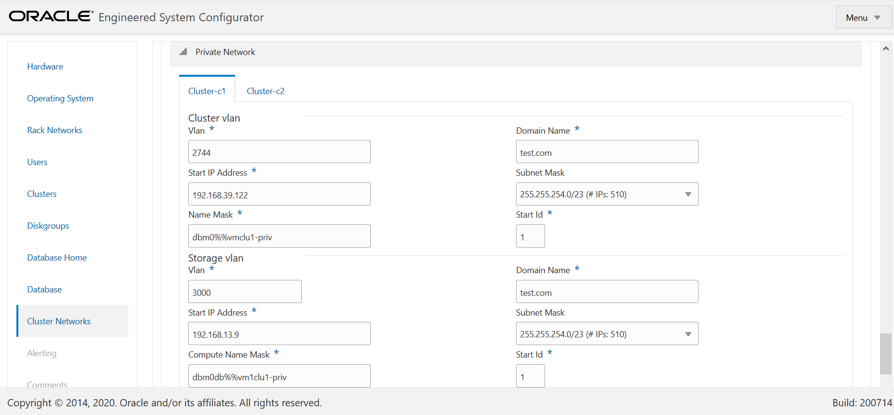

Exadata storage software version 20.1 introduces a new feature called “Secure Fabric” for KVM based multi cluster deployments (Exadata X8M). It enables network isolation between multiple tenants (i.e. KVM VMs based RAC clusters). This feature aligns with Infiniband Partitioning on OVM based systems. There are customers who in such scenarios want that VMs of one RAC shouldn’t be able to see traffic of the other RAC VMs. This feature achieves that. Similar to Pkeys in IB switches, here it uses a double VLAN tagging system where the first tag identiefies the network partition and the second tag is used to denote membership level of the VM. Exadata documention has more details.
The minimum Exadata software version needed to enable this feature is 20.1. This release comes with RoCE switches firmware version 7.0(3)I7(8).
Starting Jun 2020, OEDA supports this configuraion and this feature can be enabled in OEDA itself. To enable it in OEDA, under Cluster Networks click on the Advanced button and you will see the Enable Secure Fabric option.
Once this option is enabled, you will see VLANs enabled for the private network. While doing the deployment, OneCommand will take care of the configuration needed.
As per documentation, at present there is no way to enable it on existing systems except doing a re-deployment.